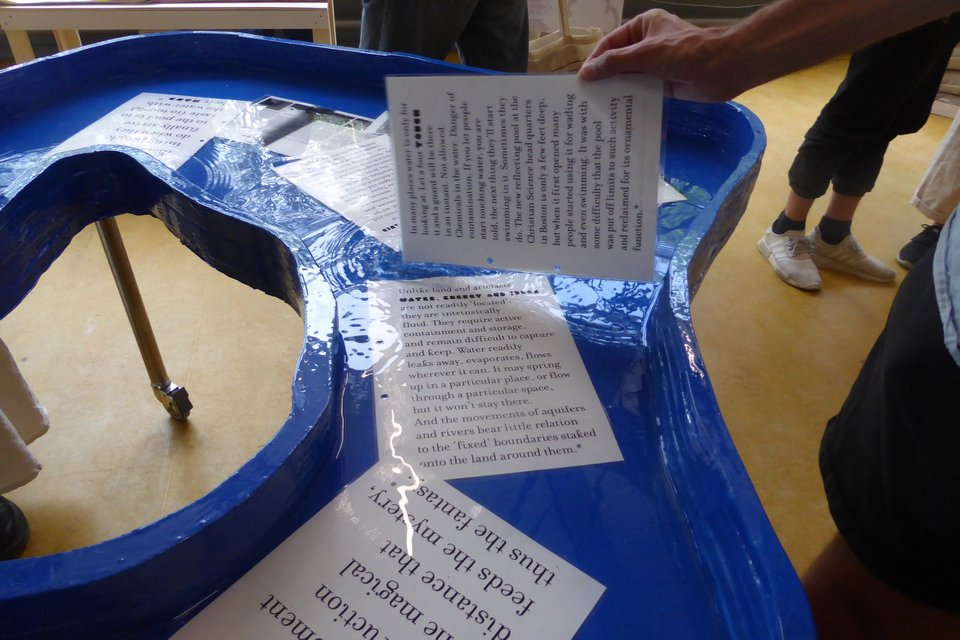

*
* recent projects first *


This website is part of a series 'made in one day' websites. When I started coding I had to learn the composition of the following website's structures. Now that I can code, I can move them around. With the cursor one can drag and drop the containers and elements of the website and dismantle the template.


This website was made earlier in May, designed by Giulia Bierens de Haan. We both studied at the Rietveld Academie in graphic design, it felt familiar to work together. The website is for Editions Clinamen, a publishing house based in Geneva, Switzerland. The dinosaur crosses the screen forever while clicking, and all the windows are moveable. The first text window when arriving on the website is for expiremental layouts and poems written by Clinamen.


E-shop! For Noon Passama's beautiful pieces of jewellery, designed by Claes Storm. When the user is inactive, a negative shape of the logo slowly fades in to cover the page!


I designed and coded this website for friend and artist Floris Dutoit. The images are piled up on top of one another like a layered cake.


Website designed by Auriane herself. Subtle hoverings and sensitive scrolls!


E-shop : designed by Marie-Mam Sai Bellier for Simon Lextrait's delicate and playful garments.


Collection of all the websites made by the ENSAD students after my workshop 'Building a website like building a house' ("Construire un site web comme construire une maison") I hosted at ENSAD NANCY in November (desktop only).
2021
Visuals
G
For Gobstoppers


Visuals made for the emails and invitations to Gobstopper (G is my favorite letter). Gobstopper is a monthly gathering creating a space to share and give feedbacks about (individual) projects. Takes place in Paris.
2021
Website
Design & web-development
www.clarapasteau.com


Another version of my website. Small subtle changes on refresh : typeface change (Serif or sans-serif or monospace) and the main columns width defers. Breath sounds on refresh or when visiting the image page.


E-shop : coded Lia Séval's beautiful online shop featuring her gleaned jewels / design by Ousseynou Salla.


Designed with Manon Bachelier and coded with my hands : the French-Moroccan collective Calypso36°21's new platform. The floating words can be selected and associated to search in the website.


Second edition of Clarisa, open from July till September 2021. Created with Melisa Zaimović. If you consult it now the website's colors will saturate.
Clarisa works like an exhibition or a fashion collection that’s been created with care to be presented and available for a certain amount of time.


I made artist Sarah Veith a portfolio website.


Small reference website for the p5.js workshop I taught at Estienne, Paris.
2021
Website
Interface and web-development
www.openday.rietveldacademie.nl


I designed the interface and coded the Gerrit Rietveld Academie Open Day website. The link is not working anymore since the website was online just for a day. It had livestreams and chat rooms to discover more about the Rietveld's education.


Bedside Productions is an ethical porn production based in Copenhagen. I coded their first online platform.


Coded artist Minne Kersten's long scroll portfolio.


First edition, open from September 15th till October 15th 2020. Created with Melisa Zaimović.
Clarisa works like an exhibition or a fashion collection that’s been created with care to be presented and available for a certain amount of time.


Designed AND coded with Maisa Imamović! We made a mini website made for Jess Henderson’s new book "Offline Matters". There is a special tab where you need to go offline (disable your wifi) to access an excerpt of the book.
2020
Website
Design & web-development
www.clarapasteau.com

Simple lines with new content were added at the top of the page when I updated the website. I changed also the colors for each update, depending of what combination I liked, or depending what I wanted to highlight.


Designed AND coded with Maisa Imamović! We made a mini website made for Jess Henderson’s new book "Offline Matters". There is a special tab where you need to go offline (disable your wifi) to access an excerpt of the book.
2018
Posters
Design
Dutch Design Week

Poster and proposal for the Dutch Design Week. As recent graduates, we got asked to design a poster for the event following strictly the same template. Humble pictures by myself apart from : - an instagram story by Camille Cornillon, and - the first image, taken by the DDW.
2018
Magazine
Design and content
GRAPHIC #42


Several contributions for the issue of Korea’s GRAPHIC magazine. This was in [2018], the year we graduated - We worked as a whole class on this issue which formulates answers to the question ‘What is education in our department’ (in Rietveld graphic design).
2018
Graduation Project
everything
Gerrit Rietveld Academie


Graduation work at the closing of my years at the Gerrit Rietveld Academie, Amsterdam, including
→ [1] an essay 'I plunged in slo-mo' (nominated for the Selected award), inkjet printed, one colored image printed in riso and silkscreened cover on textured paper
→ [2] an installation called 'A text, a ring binder, and two enlarged pages'
→ [3] and an actual pool. The pool called 'The Lagoon of Waterproof Books', (conception and building with William Eckerstein) contained water, texts, extracts, quotes, notes, that are water-related whether from close or far. Contributions by Manon Bachelier, Orin Bristow, Clara Pasteau, Laslo Strong, selected books from the Rietveld Library.
Pictures by the Gerrit Rietveld Academie and Peter Putz.
→ [1] an essay 'I plunged in slo-mo' (nominated for the Selected award), inkjet printed, one colored image printed in riso and silkscreened cover on textured paper
→ [2] an installation called 'A text, a ring binder, and two enlarged pages'
→ [3] and an actual pool. The pool called 'The Lagoon of Waterproof Books', (conception and building with William Eckerstein) contained water, texts, extracts, quotes, notes, that are water-related whether from close or far. Contributions by Manon Bachelier, Orin Bristow, Clara Pasteau, Laslo Strong, selected books from the Rietveld Library.
Pictures by the Gerrit Rietveld Academie and Peter Putz.
2018
Booklet
Design
Foam Museum

Booklet for the Foam Museam (Amsterdam) for the exhibition of Tereza Zelenkova, A5 offset print with a metallic ink.
2018
Identity
Design
SNDO
SNDO CHOREOGRAPHY GRADUATION SHOW identity, made with Orin Bristow. Played around with a dancing garlic press. Offset print for the posters, inkjet for the booklet.
2016
Typeface
Design
Diorama
Lettering for REVUE DIORAMA’s first issue.